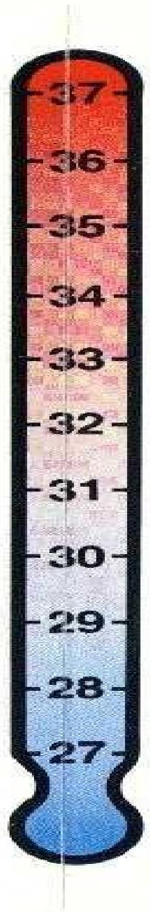
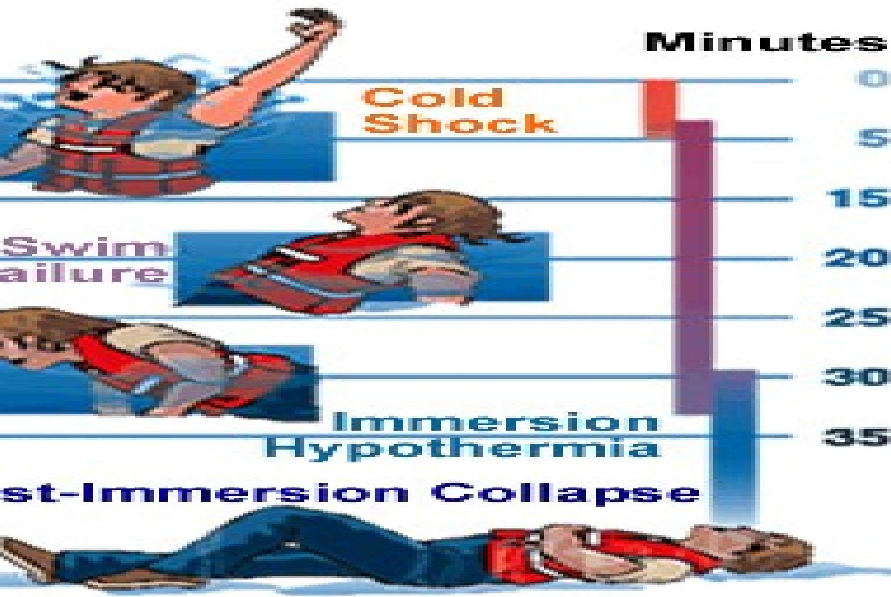

Cold-Related Emergencies
COLD
- Most common
- Hypothermia
- Frostbite
- Synthetic clothing is best because it wicks away moisture and dries fast
- "cotton kills" it holds moisture and promotes frostbite
- A hat is essential to prevent heat loss though head
- Keep water, extra clothing, and food in car in case of break down
Hypothermia
- Internal core temperate is $35^{\circ} \mathrm{C}$ or less - Elderly, infants, persons with concurrent illness, the homeless, and trauma victims are at risk
Assessment-ABCDE
Apathy, drowsiness, pulmonary edema, coagulopathies Weak HR and BP Hypoxemia Continuous temperature
Rewarming
Warm fluids, blankets
Cardiopulmonary bypass
Warm lavage
Seek ciry shelter, replace wet clothing with efry including socks, glowes. hat, cover necks, insulate Whole body including HEAD from cold. Exercise but awoic swweating. External warmth (bath, fine) ONLY if CORE TEMP- abowe $35^{\circ} \mathrm{C}$. Warm sweet drinks and for (high callories).
TEMPERATLIRE BELOM $35^{\circ} \mathrm{C}=$ HYPOTHERMIA = HOSPITAL
| HAL ED ear dirunk) STIFFMESS | NO EXEPCISE, HANDLE GENTLY, REST. NO EXTERINAL WAARMTH Gexcept to chest, trunk. eg. Hiebler Jeacket). Warm swwet dirinks and calories. Internal warming via warm rroist air (exhabed air. steam) or wamm moist oxygen ( $40-42^{\circ} \mathrm{C}$ at mask). |
| Monitor pulses, breathing. Festrict all activity, lie down with feet slightyy raised. | |
| IG STOPS. COLLAPSE. | THANSFEF TO HOSPITAL LHAGENT. |
| ASCIOUS cious nse to painful stimuli | Wothing by mouth. Check airway remaines open. May tolerate plastic airway, put in recomery position. check airway turn every 2 hours to protect skin. rmonitor pulse and breathirng. Slow mouth-to-mouth breathing, at victim's own rate (may be wery show). Cheick airway CPR, with mouth-tomouth breathingAirn for mommal CFP rates of $12-15$ breathsimin. and BO-100 commpressionsmin. Dut slower rates of $6-12$ breathsumin and $40-60$ compressionshmin. may be achequate. Continue for as long as your can. |
- NO MTAL SHGNS, COLD- DO MOT GIVE UP TFEATMEMT.
TREATMENT IN HOSPITAL
unanan.hypothermia.org
CAUTION
No ine-exposure to cold
Exercise to generate body heat but no sweating.
Warm bath.
Warm swweet drinks, calories
keep warm for several hours-
Watch for drop in temperature.
DO NOT massage cold limbs.
DO NOT give alcohol or coffee.
CHECK FOR OTHER INJURIES. MINIMUM STAY - 48 HOURS
Watch out for late cardiac arrhythmia.
Warm ordy trurik, chest.
Give warm, sweet drinks.
Viarm molst air or warm moist oxygen. $40-42^{\circ} \mathrm{C}$ at mask.
e.g. Warm IV fluids e.g. Dextrose/Saline $5 \%$ at $37^{\circ} \mathrm{C}, 5096$ Destrose, 20 ml .
Monitor pulse, respiration, ECG.
NO exercise-
NO external warmth except Hiebler warm water type jacket to trunk and chest.
NO sold air. Oxygen.
NO cold drinks.
DO NOT overloed with IV fluids.
JOLTING DURING TRANSPORT MAY CAUSE CARDIAC ARREST.
Nil by mouth exoept glucose jelly-
Check alirway, necomery position.
Turn every 2 hours to protect skin-
Oropharyngeal airway
Slow symchinonous mouth-to-mouth or mask.
Defibrillate if necessary. Intubate if unable to maintain aimway. Ventilate with $50 \%$ humndiffer oxygen at $42^{\circ} \mathrm{C}$. CPR at 6-12 verbitations/min. and $40-80$ compressions/min. Warm peritoneal lavage (standard dialysate as fast as it will flow). or Auteriovenous by-pass warming.
NO food or dinnk
Endotracheal intubation may precipitate ventuicular fibrillation.
NO drugs unless COFE temp. above $32^{\circ} \mathrm{C}$ e.g. Ligmocaine.
CONTINUE TO TREAT
Monnitor Core termp.
Monitor biochemistry (potassium, sugar, acidity) and commect cautiously.
DO NOT GIVE UP
DO NOT defibrillate until COAE temp. abowe $30^{\circ} \mathrm{C}$.
NOTE: COAE temp. lags behind skin temp, watch out for after-drop. Other complications mey arise during rewarming (e.g-cardiac, fluid ballance).
Frost Bite
Inadequate insulation is the culprit
3 stages
Superficial (frost nip)
Mild
Severe
Frostnip produces mild pain, numbness, pallor of affected skin